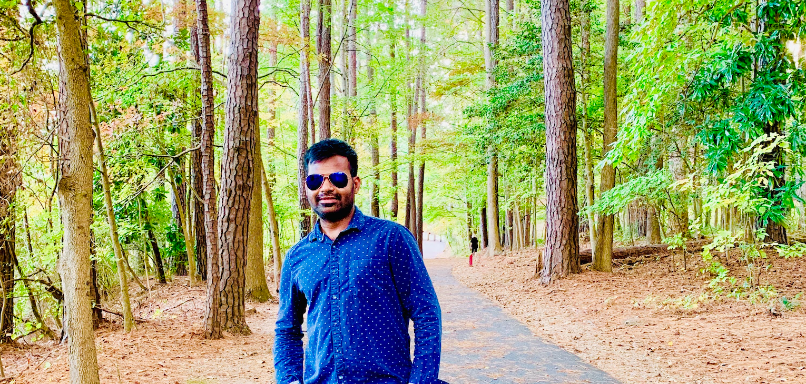

<div class="align-items-center default-container">
    <div class="col-lg-9">
        <div class="content">
            <div class="content-left">
                <h2 class="default-topic">About me.</h2>
                <p>
                    
                </p>
                <p class="default-p">
                    I'm Venkat Erikinaboina, a passionate software developer who enjoys <span
                        class="default-highlight">crafting web pages, building
                        APIs,and developing applications</span>that make an impact.
                </p>
                <p class="default-p">
                    Started my career as a Web Developer with basic <span class="default-highlight">HTML, CSS and
                        javaScript</span> and gained a good experience in developing <span class="default-highlight">
                        web-based Client-Server
                        Applications</span> using frameworks and libraries like <span
                        class="default-highlight">JavaScript, jQuery, Node.js, Redux, D3.js,
                        Bootstrap, Angular/Angular.js, TypeScript, React.JS </span> and etc.
                </p>Í
                <p class="default-p">
                    Developed single-page applications using <span class="default-highlight"> angular</span> latest
                    versions (2 to 14), Did major migration of angular.js web page to angular.
                    Migrat-ed the angular application to <span class="default-highlight">react.js</span> using next.js.
                    Created endpoints using the <span class="default-highlight">express.js(node.js)</span> framework.
                    Written the unit test cases using Jasmine/Karma. To automate the application added the E2E test
                    cases using the cucumber/gherkins. Used karate to write the automation test scripts to test the
                    API’s.
                </p>
                <p class="default-p">Great experience using Postman to test the API server-side endpoints.
                    After developing the application perform the cross-browser/cross-platform compatibility testing.
                    Created <span class="default-highlight">Spring boot Rest API's</span> using <span
                        class="default-highlight">Java</span>.
                    Done a few POCs on the new concepts and created confluence pages to showcase them.
                    Experienced in creating/modifying content and assets using WCM tools with Adobe Experience Manager.
                </p>
            </div>
            <div class="content">
                <div class="content-left">
                    <button>
                        <a routerLink="/contact" class="a-green">
                            > Contact me
                        </a>
                    </button>
                </div>
            </div>
        </div>
    </div>
</div>